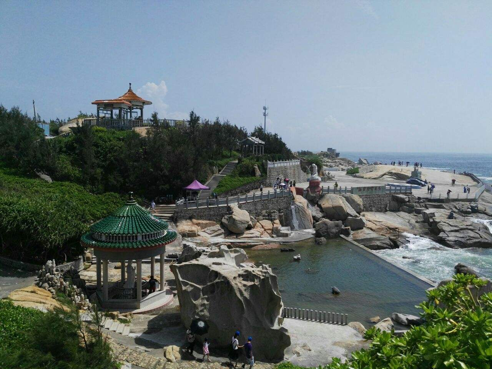
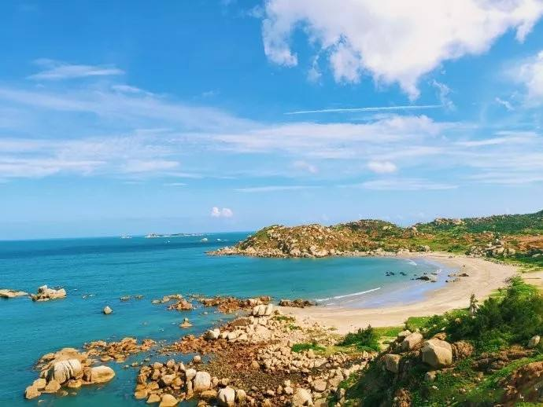
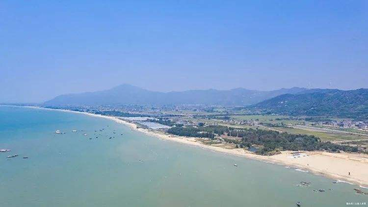
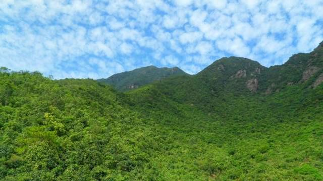
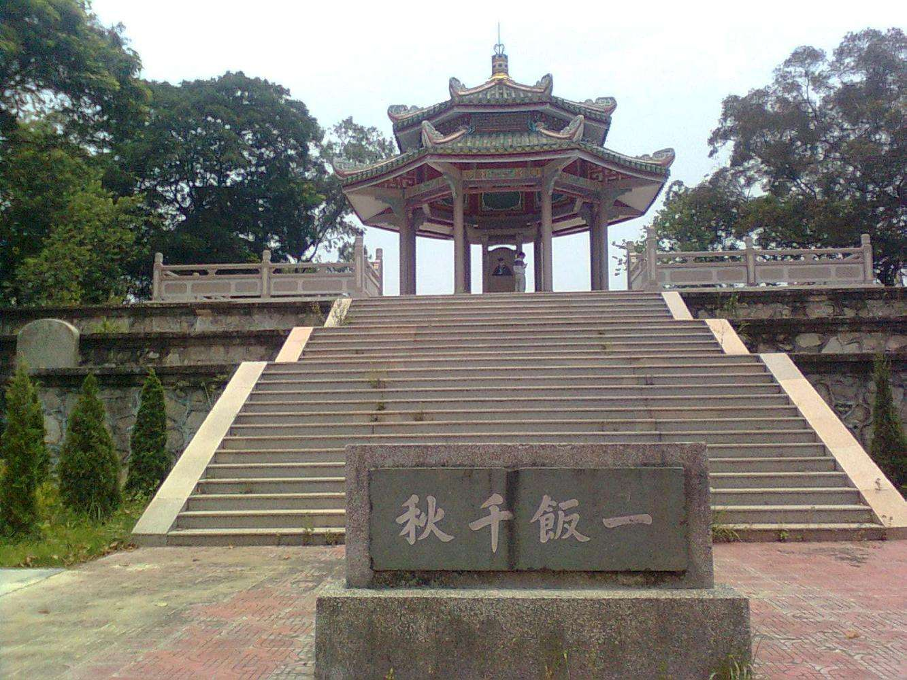
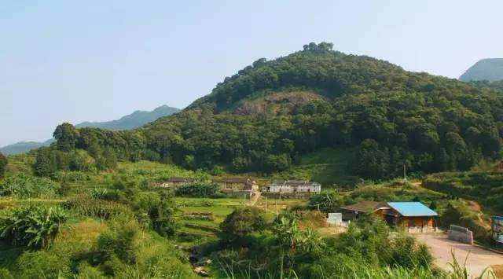

综述
滨海风光、山地生态、革命史迹和宗教人文等构成汕尾“红、蓝、绿、古”四大特色旅游资源。主要景区（点）有“汕尾八景”、 9个国家A级旅游景区，包括陆丰碣石玄武山景区（国家AAAA级景区）、汕尾凤山祖庙旅游区（国家AAA级景区）、 红海湾旅游区、陆丰金厢滩滨海景区、海丰莲花山森林公园景区、海丰红宫红场、陆河绿色生态走廊景区、陆河神象山公园、 陆丰清云山景区、陆河瑞龙庄园
| 风景 | 图片 | 简介 |
|---|---|---|
红场星火 |
 |
海陆丰是中国13块革命根据地之一，“海丰红宫红场旧址”是全国首批重点文物保护单位、 全国爱国主义教育示范基地、广东省首批爱国主义教育基地。红宫原为“学宫”， 1927年在此召开全县工农兵代表大会，成立中国第一个工农红色政权——海丰苏维埃政府。 旧址有海丰农民运动陈列室，彭湃铜像，红二、四师会师纪念亭，大成殿和五代祠， 镌刻党和国家领导人题词的“碑廊”等。“彭湃故居”为省级文物保护单位。 东征时周恩来和革命军苏联顾问鲍罗廷及加伦将军都曾在此住宿和工作。 |
玄武灵声 |
 |
玄武山位于陆丰碣石镇北郊。元山寺始建于南宋建炎元年（1127年）， 改建于明洪武27年（1577年。是全国重点文物保护单位，宗教开放场所。 寺内殿堂庑廊，僧舍厅室，共99健。殿内有清代林则徐题献的《水德灵长》 和刘永福镇碣时题献的《灵声满道》题匾，该二面匾额被国家列为中华名匾。 并有同治皇帝及提督、总兵等题匾共40多面。且藏有宋、明、清各代文物1000多件。 |
有凤来仪 |
 |
凤山，是汕尾地方的著名旅游区，位于市区东南面。这是广东通高第一的艺术石雕像。 妈祖文化广场，建筑面积6万平方米，为世界第一的专业广场。每年的农历三月二十三日的妈祖圣诞， 九月九日的妈祖升天纪念日，举行庙会，可以看到三个“国家稀有剧种”（白字戏，西秦戏，正字戏）的精湛表演； 可以听到极具海韵特色的渔歌演唱。以及多种唐音宋韵的歌舞串演。 |
遮浪奇观 |
 |
红海湾遮浪南澳半岛素称“粤东麒麟角”，她濒临南海，礁岩多姿多彩， “山、海、沙、石”兼备，“湖、岛、湾、屿”迥异，海水由于地形及海水流向的特殊性， 半岛东西两边的海面景象迥然不同。是国家级天然浴场，数次被作为国际和国内帆板赛比赛场。 |
金厢银滩 |
 |
位于陆丰市区20千米的金厢镇省级风景名胜区——金厢滩滨海旅游区。 该景区是一处融自然景观、人文景观和滨海风光于一体的旅游观光游览区， 有呈S型长约8千米、宽60米的海沙滩，滩上沙质以石英沙为主，粤东地区最大的天然海泳浴场。 |
莲峰叠翠 |
 |
位于海丰县北部7千米处，主峰海拔1337.3米，为粤东沿海第一高峰，状如一朵盛开的莲花， 故名莲花山，是广东省的四大名山之一。明清时期，有高僧在此创建鸡鸣寺、云莲寺、金竹寺等7座古刹， 宗教文化发达，被誉为“莲花佛国”。1995年3月，经省林业厅批准，建立“广东莲花山森林公园”。 |
一饭千秋 |
 |
位于海丰县城北郊五坡岭上，占地960平方米。亭为六柱八角重檐攒尖顶，通高9米； 亭内覆盖着一座庑殿顶古石亭，上刻“方饭亭”三字，内竖立石碑刻有文天祥半身画像， 此亭始建于明代正德十年（1515），为纪念南宋文天祥抗元在五坡岭不幸被捕而建， 1957年5月被县政府颁布为县级文物保护单位。 |
南万椎涛 |
 |
陆河绿色走廊南万红椎林生态公园，位于中国最大的红椎林母林采种基地——南万红椎林自然保护区内。 这里有存活距今一亿六千万年被誉为“植物活化石”的国家一级保护植物恐龙的食物——桫椤群；有满山百年红椎树林； 有350多年树龄的“红椎王”等。 |